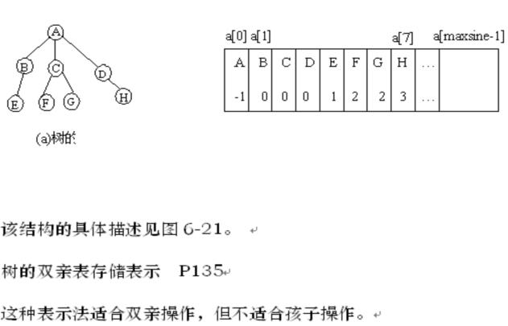
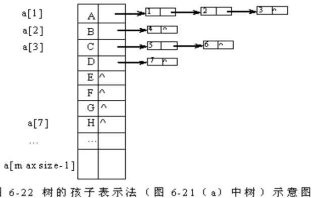
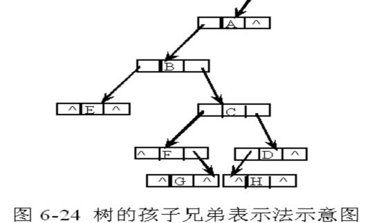
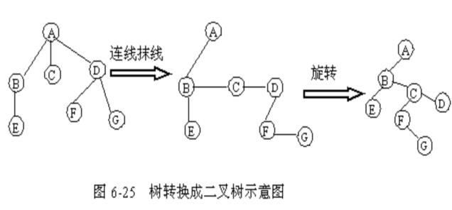
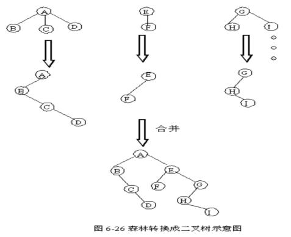

第六章 树和二叉树
§6.4 树和森林
6.4.1 树的存储结构
1．双亲表示
它是以一组连续的存储单元来存放树中的结点，每个结点有两个域：一个是data域，存放结点信息，另一个是parent域，用来存放双亲的位置(指针)。

2．孩子表示法
将一个结点所有孩子链接成一个单链表形，而树中有若干个结点，故有若干个单链表，每个单链表有一个表头结点，所有表头结点用一个数组来描述.
这种表示适合孩子操作，但不适合双亲操作，顾生成一种带双亲的孩子链表表示法。

3．孩子兄弟表示法（二叉树表示法、二叉链表表示法）
类似于二叉链表，但第一链域指向第一个孩子，第二链域指向下一个兄弟。
利用这种存储结构便于实现树的各种操作。

6.4.2 森林和二叉树的转换
1．树转换成二叉树
以二叉链表作为媒介可导出树与二叉树之间的一个对应关系。即：给定一棵树，可以找到一个唯一的一棵二叉树与之对应，从物理结构来看，它们的二叉链表是相同的，只是解释不同而已。
转换过程可以分为三步进行：
（1）连线
指相邻兄弟之间连线。
（2）抹线
指抹掉双亲与除左孩子外其它孩子之间的连线。
（3）旋转
只需将树作适当的旋转。
具体实现过程见图6-25。

2.森林转换成二叉树
任何一棵和树对应的二叉树，其右子树必空，若把森林中第二棵树的结点看成是第一棵树的根结点的兄弟，则同样可导出森林和二叉树的对应关系。可分两步进行：
（1）将森林中每一棵树分别转换成二叉树
（2）合并
使第n棵树接入到第n-1棵的右边并成为它的右子树，第 n-1 棵二叉树接入到第n-2 棵的右边并成为它的右子树，…，第2棵二叉树接入到第1棵的右边并成为它的右子树，直到最后剩下一棵二叉树为止。

3. 二叉树还原成树或森林
(1) 右链断开
将二叉树的根结点的右链及右链的右链等全部断开，得到若干棵无右子树的二叉树。 v具体操作见图6-27(b)。
（2）二叉树还原成树
将（1）中得到的每一棵二叉树都还原成树（与树转换成二叉树的步骤刚好相反）。
6.4.3 树和森林的遍历
在树和森林中，一个结点可能有两棵以上的子树，所以不宜讨论它们的中序遍历， 即树和森林只有先序遍历（先访问树的根结点，然后依次先根遍历根的每棵子树）和后序遍历（先依次后根遍历每棵子树，然后访问树的根结点）。
1.▲：先序遍历
（1）树的先序遍历
若树非空，则先访问根结点，然后依次先序遍历各子树。
（2）森林的先序遍历
若森林非空，则先访问森林中第一棵树的根结点，再先序遍历第一棵树各子树，接着先序遍历第二棵树、第三棵树、…、直到最后一棵树。
2．▲：后序遍历
（1）树的后序遍历
若树非空，则依次后序遍历各子树，最后访问根结点。
（2）森林的后序遍历
按顺序后序遍历森林中的每一棵树。
另外，请注意，树和森林的先序遍历等价于它转换成的二叉树的先序遍历，树和森林的后序遍历等价于它转换成的二叉树的中序遍历。
|